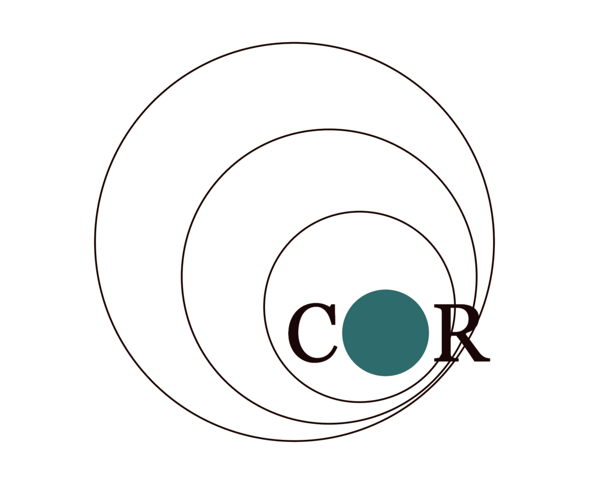
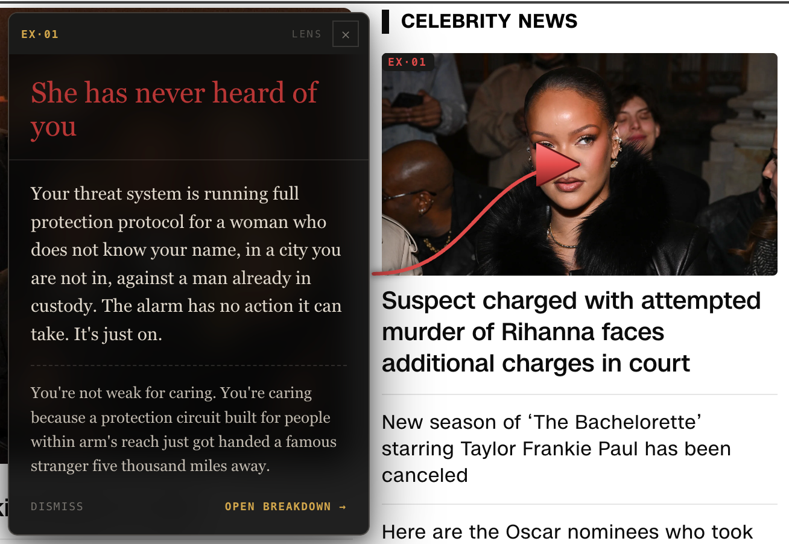

The evolutionary motivational-emotional reality of humans, specified before our tech finishes optimizing against it. Everything on this page to be built from that spec: alignment rails for machines, demismatch tools for humans.
The specification as ground truth.
Rails machines can read at inference - what humans are, beneath the layer of what they say they want.
The spec beneath both arms.
Foundations, mechanisms, convergences - all grounded in peer-reviewed evidence.
See the mismatch. Build the matched.
Software that shows you what your environment is doing to your biology, and points at what would actually help. One tool live now. Two in build. A program scoped to grow.

An atlas of the human.
A literature synthesis grounded in empirical evidence. Everything downstream is grounded here.
Currently (proof-of-concept atlas):
Two families.
Decode. Read what your environment is doing to you. Point it at a situation, a page, a scene, a room. Get back the mechanism firing, the proxy hitting it, and what would actually resolve.
Adaptor. Build matched conditions back. Assembly, not commentary. Lens is next: a morning tool that puts a role, a group, and a consequential goal back in front of you.

What comes after mismatch.
Aligned AI as builder. The machines that design, coordinate, and operate environments at scale will be AI. AI aligned to current preferences builds perfect proxies and deepens the mismatch. AI aligned to the specification builds environments that match. This is why the alignment track and the environment track are the same project.
Medium is not the constraint. Resolution conditions are. A VR, AR, or mixed-reality environment that satisfies the evolved mechanisms - embodied presence, named others, consequential stakes, shared work, mortality that matters to the group - is not a lesser environment. Physical retrofitting of cities takes generations. Matched environments in software can ship in years. Both are real.
Scale. Social units at the size the organism is specified for - roughly Dunbar. Primary identity, primary dependence, and primary governance at the scale a human brain evolved to track. The nation-state is coordination infrastructure. It was never a habitable identity unit.
Role, not job. A role is legible to the group, tied to its flourishing, irreplaceable in the short term. A job is an interchangeable labor input sold into an anonymous market. Humans are specified for roles.
Purpose as infrastructure. Waking up needed by specific named people for consequential work. Not recovered on weekends. Not discovered at forty. The organizing fact of the day - or the organism signals its absence. The meaning crisis is a mismatch readout. Under the right conditions it dissolves.
Dynamic egalitarianism. Status that the organism recognizes as legitimate: prestige-based, earned in-group, reversible, visible. Reverse-dominance coalitions as the default political form. Not flat - dynamic. Hierarchy that responds to contribution and can be withdrawn.
Economic substrate. UBI or functional equivalent. Not welfare - the precondition. The current system forces people to sell time in anonymous markets to afford to exist, which mismatches almost everything else. Remove that constraint and the rest becomes possible.
Sovereign groups. Legal recognition of Dunbar-scale units as the substantive social and governance layer. This is not secession. It is moving the unit of belonging to the scale the organism is specified for.
Augment from the baseline. Once environments match the specification, technology extends human flourishing instead of displacing it. Augmentation inside a mismatched environment deepens the mismatch - the proxy gets smoother, the signal stays unmet. Augmentation from a matched baseline is what this whole project is building toward. Demismatch the world - then augment.
Demismatch succeeds when people wake up in environments that match their biology - with a role, in a group they actually belong to, with work that matters to specific named people, at a scale the organism is specified for. Everything above this section exists to build this.